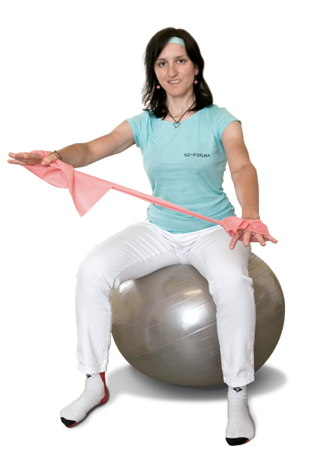
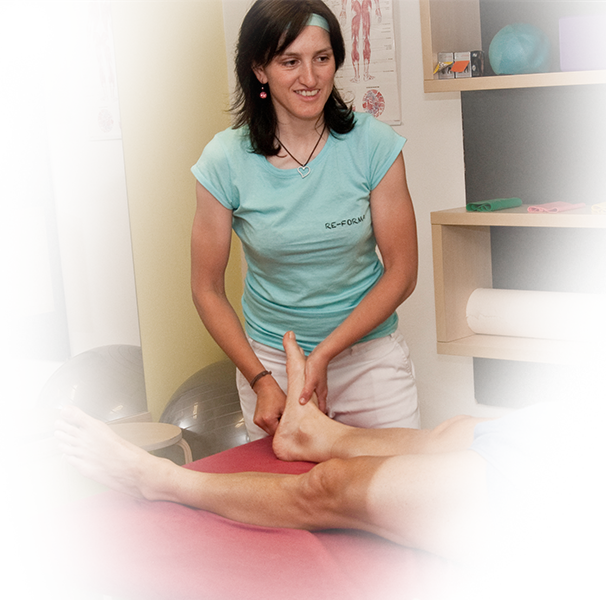

MGR. Petra Krtičková
„Slunce v paprscích svého kola vidí jen ten, kdo jím sám pohybuje…“
Hans Blickensdörfer
Jmenuji se Petra Krtičková. Titul Magistr fyzioterapie jsem získala na Fakultě tělesné kultury v Olomouci. Medicínský směr mi nicméně určila již střední škola, obor farmaceutický laborant. Zde jsem získala rozhled v možnostech bylinné léčby, účinku léků a jejich možné vzájemné kombinace. K rozvoji ve fyziopterapii přispělo studium v zahraničí i zahraniční stáž a následná praxe v zařízeních ambulantního, nemocničního i lázeňského typu. Nyní pracuji na seberozvoji v oblastech sportovní fyzioterapie, diagnostiky a psychologie člověka.

S Kým Spolupracuji
- Rakouský reprezentační team – silniční cyklistiky
- Humard velo passion - Švýcarský team silniční cyklistiky
- Členka České společnosti tělovýchovného lékařství
- HSK cycling team Hradec Králové
- Sportomed Istanbul – léčebné středisko pro hráče Fenerbahçe Istanbul
- Partnerem Golf Trophy Tour 2016
- Partnerem Unie amatérských cyklistů - UAC

Vzdělání a odborné kurzy
- SM systém
- Fyzioterapeutické vyšetření sportovců
- Kineziotaping
- Kurz Feldenkraisovy metody
- Fyzioterapie u dysfunkce pánevního dna a inkontinence
- Funkční testování a trénink pro fyzioterapeuty
- Stabilita v pohybovém systému a hluboký stabilizační systém
- Kurz Vojtovy reflexní lokomoce „A“
- Kurz instruktor Schwinn cycling
- Základy Nordic Walking